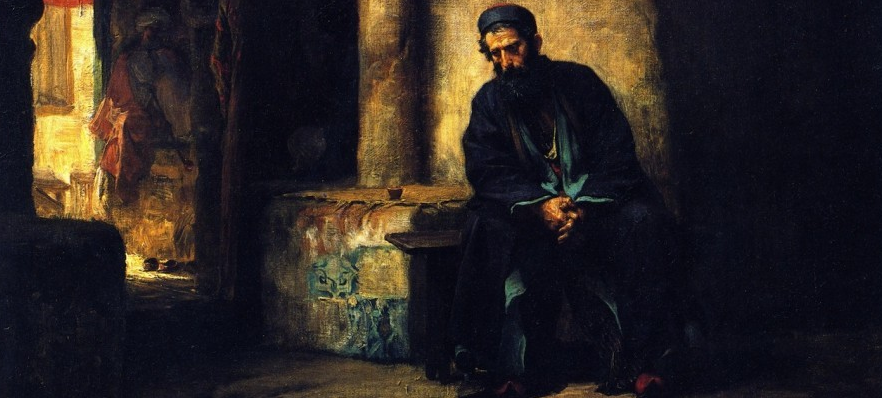

The thoughts of man
Cordonnier: Some perspective as a new father. (I spent an hour drafting this, lol) From watching our own child develop during pregnancy, especially with the ultrasounds and modern science getting to see and experience so much of him before he is born, has made us that much more sure of each of our stances. 22 weeks is now protected as the new line in the sand in Ohio. During Maddie's pregnancy, both the 10th and 20th week ultrasounds, the amount of development, even early on was astounding. During these ultrasounds, we got to see James being James. His little quirks of his that we have seen post birth were also present somewhat at 10 weeks and unmistakably at 20 weeks. I'll attach the actual ultrasounds, just for context. One thing to note is that while these are still images, the actual ultrasound shows the baby moving, kicking, hiccuping, sucking their thumb, heart beating, etc. Please, give this a read, it's a week by week breakdown of what happens in the womb. With modern science we have such detailed information around this and I want everyone to be well informed. https://www.babycenter.com/pregnancy/your-baby/fetal-development-week-by-week_10406730 I share all of this because life is the cornerstone from which all else builds. If our mothers had not chosen to protect and carry us when we were at our most vulnerable, none of us would even be here. I would love to hear your guys perspectives on this, or field any questions around my views on this.
Reischel: Regardless, women should still have the choice whether to go through with that or not. James is lucky to have been born to great parents in a great stable home - usually not the case with women considering abortion.
Cordonnier: Yes, it is true that Maddie and I have a great setup that has made this much easier. Maddie has said that she has even more sympathy for women in bad situations after going through pregnancy. Every week I spend time with women/men who are considering abortion, so I know what their position looks like, and I want them to be helped and supported in every way possible that does not infringe on the rights of others. It is a modern American view that everyone can do and believe what they want, as long as it doesn't hurt or limit others. The case I am making is that I think we should think long and hard about when the unborn child "gets" to count as a person. Should the choice of the woman supercede the rights of that unborn child? (I would say yes if her life is in danger, no if it is not.)
Kelly: I appreciate you sharing this Jack To piggy back off of Chris, I am super happy for you and Maddie. You guys will be good parents and I don't want to take that away. I can't wait to see how James grows under people I can say will be good for them That said, I do believe that giving the choice of reproductive rights back to the women who has to go through this process is a huge step in the right direction (even if it comes at the expense of the potential of life) We as people (and especially men) who don't have to go through this burden telling a woman to go through this doesn't sit right with me. It can go down a big rabbit hole of things that I personally don't want to bring up over text To your point of us not being here if it weren't for life, you're correct. We wouldn't, but at what expense? This goes back to a time where women had no say in their reproductive rights. If they did and we wouldn't be here, then I guess that's it. We wouldn't be here. If that's what someone wants, then so be it. I'd rather someone have that choice over going through a process that not only they don't get to go through on their own say, but eventually living a life of remorse and harmful thoughts towards someone who doesn't deserve it I'll just end with this. Whenever people die, we respect the wishes that they lay out for us. Whether it's being buried somewhere, cremated, putting their ashes in a place they love, etc. Why do we respect someone's wishes who no longer has agency over their own body over someone who does? I don't want to start a discussion about this now as I'm at work and will probably not have the time or energy to respond, but I just need to get my thoughts out there about this
Cordonnier: Thanks for the perspective Aidan, one of things I admire about you is your care for people, and I have no doubt that the support for abortion rights is done out of love for the women in these situations. A few things: When our moms were pregnant with us, the US had a very high rate of abortion and our moms did have that choice. They legally could have gotten one if they wanted to. To cite a research paper by U Chicago, (https://pubmed.ncbi.nlm.nih.gov/36629778/) "Biologists from 1,058 academic institutions around the world assessed survey items on when a human's life begins and, overall, 96% (5337 out of 5577) affirmed the fertilization view." (For full context you can read the abstract) I want to lean on science here and point out that the scientific community seems decided on when life begins, and it seems logically sound to say to women that they need to carry that child because it is a new human life and they have a unique responsibility as a mother to care for that life during that time since no one else can. One way to build on this is... "I wish that I could be pro-choice because the awful circumstances so many women face—that I can’t even imagine facing—seem so much more real to me than the rights of a fetus who doesn’t even always look human. But abortion is the intentional killing of a human being and we look back with horror at anyone in history who decided a group of people did not actually count as people. We cannot solve the problem of injustice against women with more injustice. We need solutions that support women without killing fetuses" (The Atlantic, 2022)
Hoffman: I agree that fetuses are humans and therefore abortion is murder and that we have a moral duty to work towards a world with no abortions. However, I don’t think government bans do anything to bring about the end of abortion or even lower the number of abortions. If I banned abortion, people would just go to other states to get them while I feel morally superior for it not being in my backyard while the amount of abortions never really changed. Rather, I think the path to zero abortions can only be achieved by attacking the motivation for abortion rather than the institution of it. People don’t want to get abortions, they feel like they HAVE to. If you remove the social pressures that create this feeling, then there will be no motivation to get abortions anymore. The social issues that cause these feelings are various and complicated but addressing them is the only practical way to achieve a world with zero abortions. However, the conversation on these issues can never really happen in a country that doesn’t guarantee a right to abortion. That’s because the conversation will always be centered around achieving that right as a preset to any other tangential issues. Even if you said that abortion bans save some lives and that every life counts, I would say that it is better to sacrifice some lives now so that we could potentially save EVERY life at some point in the future.
Anderson: Thanks for your perspective, Jack. I think you are right that deep discernment ought to be undertaken on the issue of when a life begins. In my view, I don't know if abortion necessarily equates to taking a life, but preventing a life is still definitely a hell of a thing to do. The gravity of such a decision is something that I think does get swept under the rug, and I think you're right to highlight that. I cringe a little when aborting a fetus is thrown about so flippantly. It definitely is something that should prompt serious reflection. I'm so glad that you and Maddie value life so much. I'm sure you guys are amazing parents With that all being said, the moral question of abortion is something that should be left in the hands of women. It's easy to think that deciding to have a child is simply a one-time choice, but it's really a radical departure that transforms the life of the woman making it. And that transformation can ultimately land a woman trapped in a situation that echoes women's limited freedom of the past. The right to choose is not just the right to place your theoretical stance on a moral issue: it's the right to decide what kind of life you want to have. And for so long in human history, women were given no choice in this matter. Many women want this newfound freedom protected. Many women are even understandably suspicious that the obsession with abortion is ultimately based on men's desire, conciously or unconciously, for women to resume their historical role of being in the home. And that must be terrifying if you're a woman who has no interest in being a mother. There are of course sound moral reasonings for opposing abortion, but do I ~really~ believe that 100% of politicians that support an abortion ban do so because they deeply believe in the sanctity of life, even as they support the death penalty? Even more profound than that, the restriction of abortion is a restriction of bodily autonomy. I like to refer to a metaphor I once heard on blood transfusion. Say there's someone in the world who has a rare blood condition, and will die unless they get a transfusion from you specifically. Let's say you obtained this special blood based on your own decisions. Let's say you were even going to go through with the blood transfusion but later decided against it. The government STILL does not have the power to compel you save this person's life, since it would reject your right to bodily autonomy. Even though someone else will die. It's just not a power the government should have. And this seems reasonable to most men I've met. The fact is that men have no idea what it's like to have your social value be derived primarily or even solely from your body. But this is precisely what women went through for the vast majority of human history. It's not bad to think abortion as a moral act is wrong, but men simply MUST give women the right to decide this on their own. To decide for them is tantamount to suggesting you know more than them. That we should get to draw the trajectory of their life. That they're not entitled to full, unmitigated, unrestricted, absolute sovereignty over their body
Cordonnier: Eric, very fair points throughout. I am so happy everyone is chiming in, this is very interesting. I think where we differ is twofold. One difference is your desire for a utilitarian solution. Making the choice for someone else that their life is over for the possibility of progress isn't something I can get behind. But that's because I am opposed to utilitarian lines of thinking. Secondly, I cannot reconcile myself with the solution of needing abortion to be legal for progress to be made. Stealing is illegal and immoral. It should be illegal. We should still address the issues that cause stealing to be a problem in society. People will still steal, and there isn't a single law that I can think of where people won't break it. But that doesn't change the fact that communities try to make laws to make a safe and moral society where all are protected. The government makes decisions like this every single day to make things safe for everyone in the community. It doesn't seem moral to make a loophole or excuse "for the greater good". Ok, Jack, also, thanks for putting such thought into this. It's cool how mature this group as a whole has become.
Cordonnier: I have been talking with Maddie and running everything I have said to get her feedback. One of the comments we both made was the fact that it seems you are speaking of pregnancy as if it is something that springs upon women without warning. (Outside of cases of rape, ~2.5% of abortions) When sex occurs, all parties are assumedly aware of the possible consequences. Women have the agency and autonomy up front to decide how important their reproductive status is. If they are willing to take the risk of being sexually active, they need to be ready for the responsibility that may entail, men as well. And even if someone is taking all of the precautions to not be pregnant, just because those precautions fail doesn't then justify this most extreme measure. Desiring sex to be "consequence free" as a culture has exacerbated this problem a lot. In the pursuit of equality and autonomy, we have run into this biological roadblock, where if women want to be able to be as sexually and socially liberated as men, then abortion as a right is a must. But trying to force this equality through immoral means doesn't seem like the way. And for the talk about men obsessing over abortion, Maddie wonders what you will say to a women like her who is pro life and wants that to be the case for other women? I'm very glad you mentioned the thought experiment, I was thinking you would since you've taken a lot of PHIL courses and such. For the thought experiment you mentioned about the blood transfusion, I actually came across a very similar one in a Philosophy course in college called "The Violinist Analogy". With both of these experiments, the one thing that my professor acknowledged as a possible defense against them is this. Does a mother/parent have a unique responsibility for a child that one does not have to a stranger? Should that responsibility supersede one's autonomy? You are right to say that children interfere with women's freedom, because they do, for men as well. But that raises the question of what should be more important than one's own autonomy? One's responsibility to their children? That's the question I pose to you If autonomy and freedom are for you the most important pillars morally, then your logic is sound.
Kelly: I'll chip in these last points in regards to this topic. Anything following I'd prefer to keep off text and in person if possible. Thank you Reading through all of this, my two main takeaways are this: • The point of “we know the consequences going into sex so whatever happens you have to live with it”. I’m not trying to say you're doing this, but to me, this sounds like victim blaming. The issue of this is we of course know the risks, so things are put in place of to make sure an incident doesn't occur, the main one being birth control through many different means. Sometimes (and just like anything), they fail and a pregnancy can occur. This goes beyond birth control and having sex, but you can do all the right things and the thing you don’t want to happen will. Take driving for an instance. You can apply the same premise beforehand here. You can go out onto the road knowing you can get into a crash, yet we take the risk to go out and drive anyways. We make these choices in doing so. If you get into a crash that was not caused by you, should we be blaming them? •The point of Maddie being pro life. What will I say to women who are pro life? I say that it's your choice to have a child and no one should ever take that away from you. That said, being a woman doesn't give you a right to speak for another women's situation. Being one only allows them to be the sole voice of their own bodily autonomy and choices made in regards to a pregnancy I feel like we shouldn't squash the conversation since most people aren't in person ever, but I will say my last piece and save the rest for in person with you.
Cordonnier: Victim blaming (Def): Victim blaming occurs when the victim of a crime or any wrongful act is held entirely or partially at fault for the harm that befell them. Victim blaming isn't applicable here because no crime or wrongful act has occurred. Consensual sex is consented to, which makes it neither a crime nor a wrongful act. We cannot equate a bad outcome that someone doesn't desire with someone being wronged. Women are very capable and intelligent and are not victims if they consensually have sex and the outcome isn't desirable. Do we want people to get into car crashes? No, do we have sympathy for people who do, yes. Do you have to deal with the consequences of the car crash whether you like what they are, yes. It’s nice hearing everyone’s take on this. I’d like talk about other things in the future too that we have strong thoughts on. Anyway here’s the super long take I’ve been cooking for the past couple hours.
Hoffman: As a response to Cordonnier, firstly I reject your attempt reframe the argument as being one of utilitarianism vs. morality. I take this utilitarian stance not because I am a utilitarian or am predisposed to utilitarian thinking but because I truly believe it is the most moral method for this particular issue. I believe it is the most moral because I have evaluated the options and determined that this one would prevent the most abortions overall and import the least amount of suffering to do so. Although I once agreed with banning abortion, I have since been disillusioned to the potential of it to produce any tangible good. Rather I just see it as a way for lazy people to cast a vote and feel like they’ve done their part when the issue actually requires much more difficult problem solving. I’m also not taken by the moral absolutist view of “I have to try and do right thing, even if I know it won’t work.” I’m opposed to Russias invasion of Ukraine but I don’t need to fly to Moscow and try to invade kremlin by myself. I’m capable of reasoning that I can do more good by promoting more US aid to Ukraine even if doing so doesn’t immediately save lives or stop the war. I’m not a moral absolutist and neither are you. If you were you would be fighting crime at night like Batman. The only reason people choose the absolutist view on abortion is because it is much easier to put in a vote or protest a clinic than it is to beat up thugs in alleyways. There are limits to what we can reasonably do to solve problems and how effective those solutions are. Everyday we weigh these costs and possible outcomes in order to decide how best to act. Someone isn’t more moral just because put less reasoning into their decision or are willing to sacrifice more for less benefit. I’d like to question with what moral framework you use to come to the conclusion that prohibition is the most moral action? If it’s a judeo-Christian perspective then I understand the apprehension to murder but don’t get how that necessitates enforcing it through law. I don’t remember any part of the Bible saying “thou must weaponize the tools of a state to enforce these morals on others.” I agree that laws are good for organizing society and making it safer and more moral. But, ultimately, the duty of morality falls on the individual not the state. While I might be for or against certain laws, I don’t feel like what is or isn’t written in the Ohio constitution has any affect on my soul or conscience. If I’m gonna utilize the state’s structures for moral means it should be through methods that I actually think will work and address the problems. Not, “this won’t work but we have to do it to feel good about ourselves.” I’m my opinion that line of thinking is more potentially dangerous than a utilitarian view of “this might not be the most moral but it’ll have the best outcome.” Secondly, I believe that progress can’t reasonably be made while abortion is banned because abolitionism has historically only served to worsen issues and cause more suffering for the people most effected by them. You can see a clear example of this in the war on drugs. Where cracking down on drug not only did nothing to limit usage but also led to millions of people dead and in jail and billions of dollars wasted. By only attacking the result (drugs) they inhibited any attempt to address the source (addiction). This was because of various conflicts like addict being treated as criminals rather than sick. Similar conflicts occur if you try attacking the outcome of abortion rather than the source. You mentioned stealing as an example of an action that is prohibited while also being worked on. But this is a bad example for two reasons. One, stealing and abortion are fundamentally different crimes. People naturally want things that don’t belong to them, no one naturally wants to get an abortion. It’s very difficult to teach someone about how stealing is inherently self harmful in the long run, but it’s much easier to convince someone they don’t want an unnecessary medical procedure. The second reason that stealing is a bad example is because it actually helps my argument. I’d argue that a vast majority of thefts are prevented by addressing the source of the motivation rather than punishing the outcome. It is very easy to steal. I could easily go to a grocery store, load up my pockets, and walk out uncontested. The reason I don’t do that is because I was raised right and don’t have the economic need to do so, not because I’m scared of the law doing something about it. If we lived in a country where everyone was starving and then there would be nothing you could do to stop people from stealing and trying to punish them would just end up creating unnecessary suffering for no benefit. In this case, it would be better to redirect the resources being used to police theft towards alleviating poverty, then go back to policing after the issue had been largely addressed. In general, it’s better to focus time, energy, and funds toward promoting societal development and lowering the stresses that cause bad behavior first. Then after these needs have been met, start policing in order to catch the fringe cases that don’t stop with the change in culture.